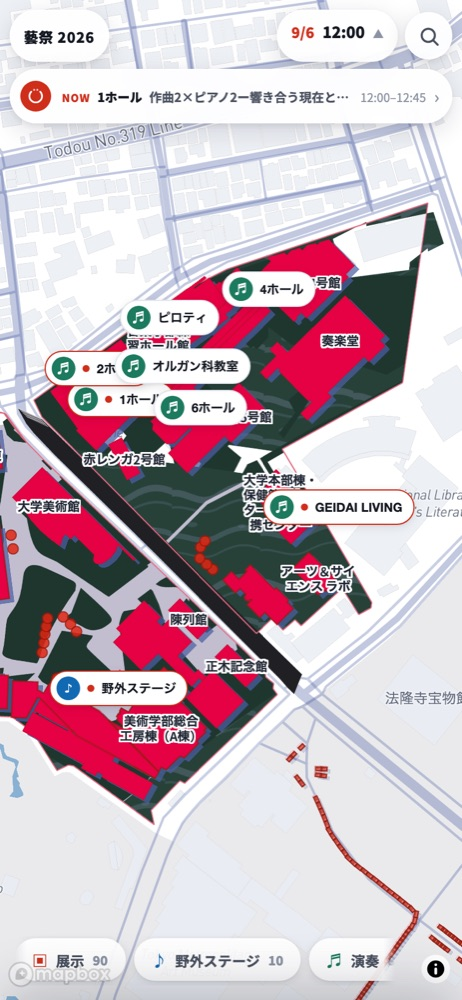
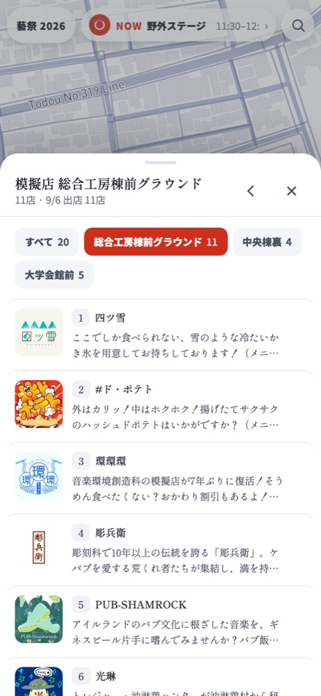
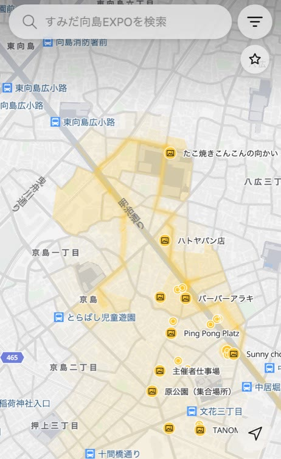
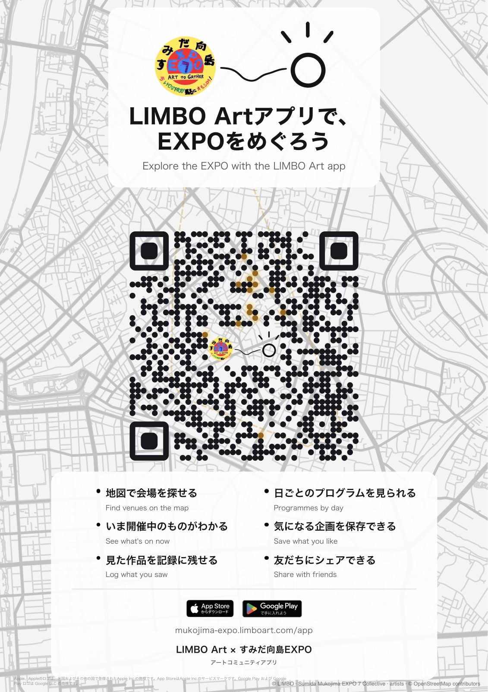

LIMBO festival systems: GEISAI 2026 and Sumida Mukojima EXPO 2026
LIMBOは、東京藝術大学グローバルアートプラクティス専攻で出会った5名（韓国・日本・中国・香港）によるアート・カルチャー・プラットフォームです。芸術祭ごとに、会場・作品・イベントを一枚の地図にまとめ、来場者・アーティスト・運営がそれぞれ使える仕組みをつくっています。邢（ハル）はフェスティバルモードのUI/UXリード（一部プログラミングも担当）です。
LIMBO is an art & culture platform formed by five members (Korea, Japan, China, Hong Kong) who met at Global Art Practice, Tokyo University of the Arts. Hal: UI/UX lead for festival mode (and some programming).
GEISAI 2026 campus map

キャンパス全体マップ・「いま」の表示
建物ごとの会場を地図上に表示。上部のバーで、いま開催中の演奏・ステージがわかります。時刻を動かして先の予定も確認できます。

模擬店・ゾーン別の一覧
展示・野外ステージ・演奏・模擬店などをカテゴリーとエリアで切り替え。日ごとの出店状況も反映します。
Sumida Mukojima EXPO 2026 festival mode (LIMBO app, iOS / Android)
まちに点在する会場とプログラムを、LIMBOアプリの地図にまとめました。藝祭との大きな違いは、アーティストや会場が自分のアカウントで、会期前・会期中もリアルタイムに情報を更新できることです。アプリの審査を待たずに内容を変えられます。

画面をタップ、または左右キーで切り替え / Tap a step or the screen to switch.
目指しているのは、Wikipediaやオープンソースのように誰でも参加できる、アートの「地図」です。どの芸術祭やアートスペースでも使える仕組みにしていきます。
Goal: an open, Wikipedia-like "map of art" that any art space or festival can use.

会場ポスター（A4・A3）
まちの地図の上に、アプリを開くQRコードを置いたポスター（卓上スタンド版もあり）。中央のQRコードは、スマートフォンのカメラで読み取るとアプリが開きます。
Venue poster: the app QR set into the festival map. Scan it with a phone camera to open the app.
画面は出展者ガイド用のデモ・テスト画面です。 / Screens are demo and test screens from the artist guide.